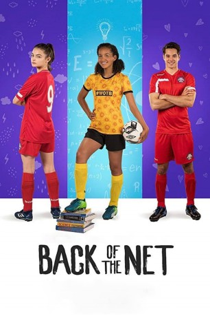

IMDB-Wertung: 4.9 / 10
IMDB-Wertung: 4.9 / 10  Tomatometer: 40
Tomatometer: 40  Metascore:
Metascore: 
A new student at a soccer academy is determined to beat her rival's team in the national tournament.
 IMDB-Wertung: 4.9 / 10 Tomatometer: 40 Metascore:
A new student at a soccer academy is determined to beat her rival's team in the national tournament.
Jahr: 2019
Dauer: 86 Minuten
FSK:
Land: Australien Studio: Umbrella EntertainmentTonspuren: - , - , - , - , - ,
Untertitel: Englisch, Deutsch,
Auflösung: 1080p (1920x1080) Größe: 5406 MB
Genre: Familie
Regisseur: Louise Alston
Drehbuch: Casie Tabanou, Alison Spuck McNeeley, Clay Glen
Soundtrack: Angela Little
Darsteller:
Datei: X:\2019(A-F)\Back of the Net (2019, FSK, 1920x1080).mkv seit 30.12.2019
Festplatte: HD 2018(G-Z)-2019(A-Z)
 Es gibt insgesamt 60 Filme in der Gruppe '2019(A-F)'
Es gibt insgesamt 60 Filme in der Gruppe '2019(A-F)'